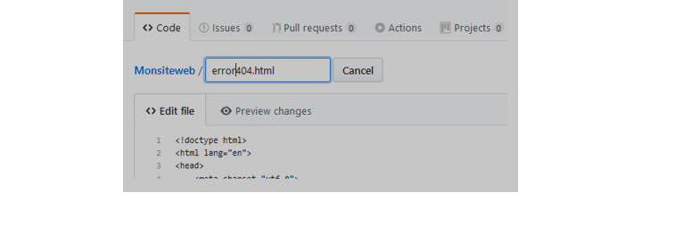
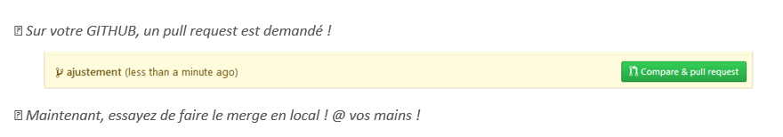

First Step: Changes on Github
3. Renommer le fichier 404.html en error404.html.
2. Sur GITBASH, vérifiez avec « git status »
Second Step: Branching and merging sur GITHUB
Third Step: compare pull Requests
fourth Step: merging en local

10. Si tout est OK ! sur GITHUB le pull sera vérifier ? explorez le pull pour visualiser les changements ?